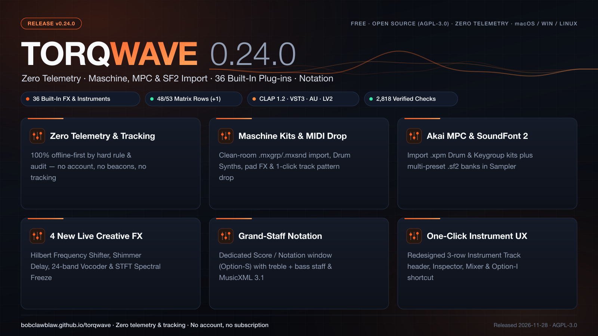
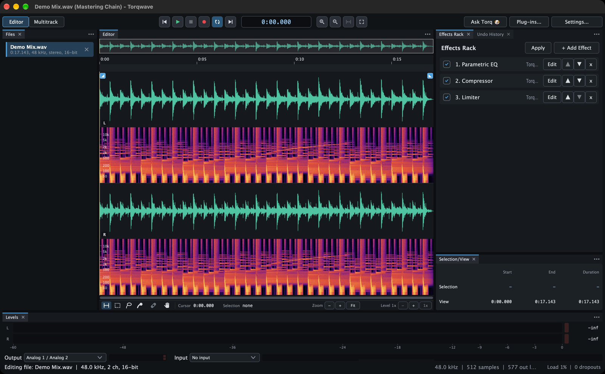
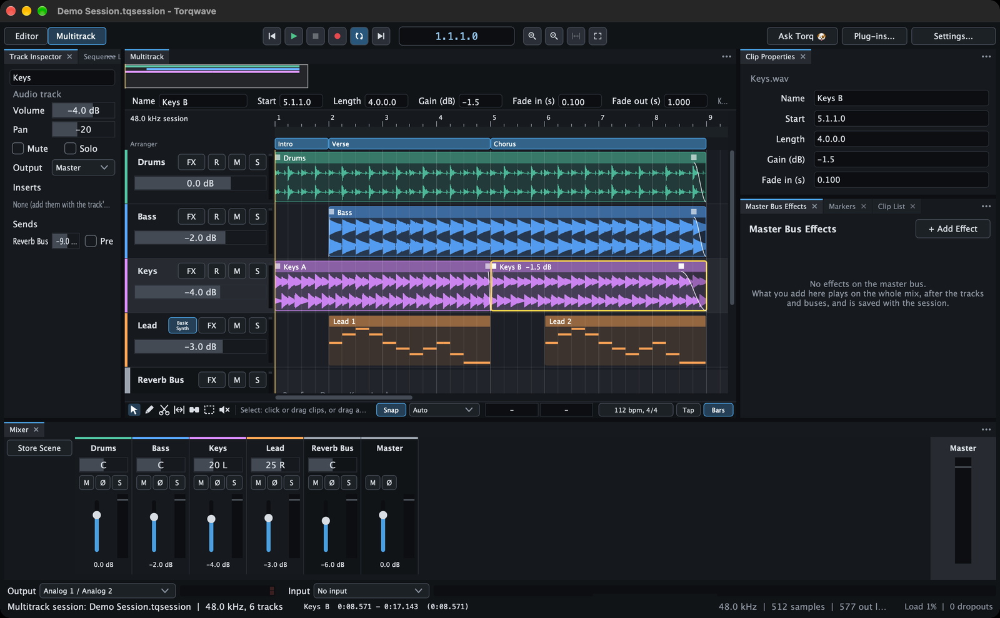
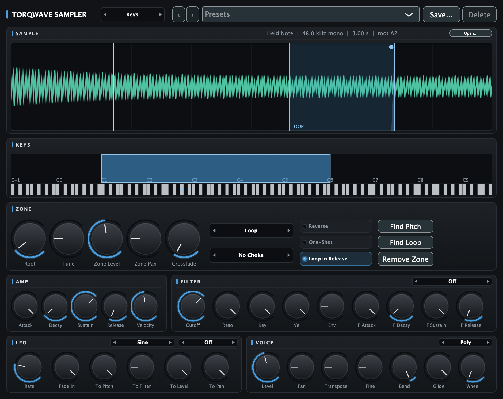
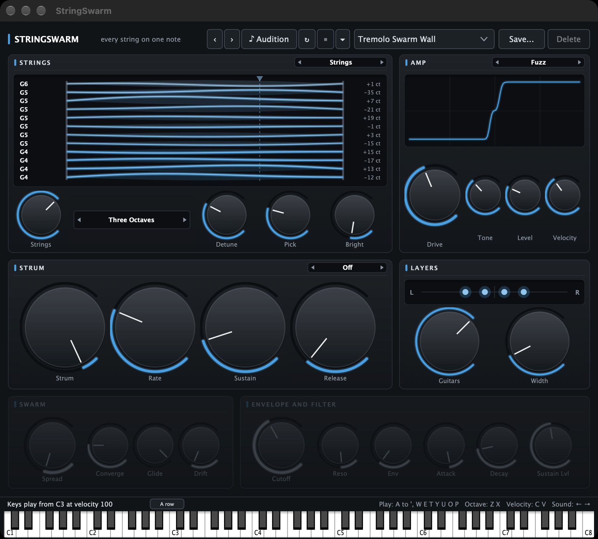
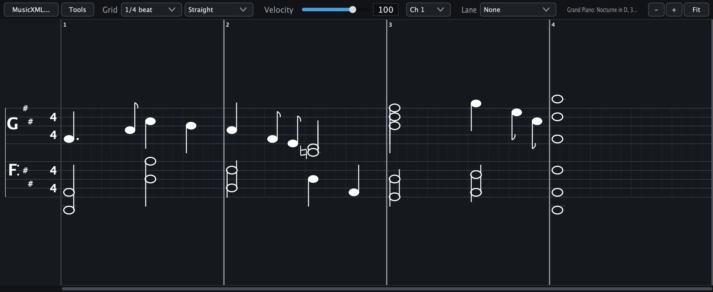
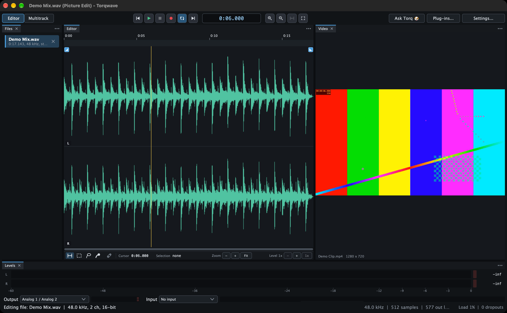

An audio editor and a DAW in one: for sound design, for writing and producing music, and for working to picture.
Free, open source and 100% offline-first for macOS, Windows and Linux — zero telemetry, zero tracking, no account and no subscription. Edit a file down to its spectrum, repair and master it, then build a session around it with instruments, live creative & MIDI FX, a piano roll, automation, CLAP 1.2 plug-ins and video, without leaving the program.
What comes built in, played by Torqwave itself: nine-oscillator Complex club sounds, rewritten Sequence Library kits and patterns, Torqwave Synth and StringSwarm. Nothing was added after the render.
Built-in tempo-synced Arpeggiator (1/16 Up-Down, 2 octaves, 58% swing) while 4-Scene Evolve morphs continuously across Velvet Roller, Strobe Pluck, Palazzo Chord and Elysian Bloom.
Rendered directly by Torqwave 0.23.0 (TorqwaveTests --023-demos): 8 bars at 128 BPM.
9-oscillator Palazzo Chord stabs dry for 2 bars, then live Tape Delay (with wet ducking) and Volume Shaper (Club Pump with 160 Hz low-band split) pumping over a kick.
Rendered directly by Torqwave 0.23.0 (TorqwaveTests --023-demos): 6 bars at 132 BPM.
9-oscillator Velvet Roller bassline stepping every 2 bars through Clean, 4x-oversampled Tube, Wavefold and Bitcrush into the resonant Auto-Filter (LFO + envelope follower).
Rendered directly by Torqwave 0.23.0 (TorqwaveTests --023-demos): 8 bars at 130 BPM.
Four single root notes transformed live through Scale Lock (A minor) -> Chord Trigger (Min 9) -> MIDI Arpeggiator -> Note Echo (+12 st shimmer) driving Strobe Pluck.
Rendered directly by Torqwave 0.23.0 (TorqwaveTests --023-demos): 4 bars at 126 BPM.
9 oscillators (8 sounding, 1 silent FM): Analog sine, Sub, Analog saw (FM warp), Pulse an octave up (Bend warp), String an octave up, Analog saw an octave up, Analog saw an octave up, Additive two octaves up. Filters: Ladder 24 at 480 Hz and SVF High at 340 Hz. Legato. Effects: tube drive. Macros: Cutoff, Wood, Width, Warmth.
9 oscillators (31 parts in use); no. 3 of 4 in Complex › Bass. Plays four bars at 132 BPM. Joined 0.1 s in.
9 oscillators (8 sounding, 1 silent FM): Analog saw x3, Pulse, Analog sine (FM warp), Analog triangle +7 st, String, Analog saw an octave up, Analog saw an octave up, Additive an octave up. Filters: Ladder 24 at 2.4 kHz and SVF High at 520 Hz. Legato. Effects: tube drive, chorus, 1/8 D delay, reverb. Macros: Cutoff, Shimmer, Fifth, Space.
9 oscillators (34 parts in use); no. 3 of 4 in Complex › Lead. Plays four bars at 132 BPM.
9 oscillators (8 sounding, 1 silent FM): Analog triangle an octave down, Analog saw x3, Pulse, Vowel an octave up, Analog sine an octave up (FM warp), Analog saw an octave up, Additive +19 st, Additive two octaves up. Filters: Ladder 12 at 1.3 kHz and SVF High at 480 Hz. Effects: chorus, 1/8 D delay, reverb. Macros: Bloom, Choir, Halo, Space.
9 oscillators (31 parts in use); no. 3 of 4 in Complex › Pad. Plays four bars at 132 BPM. Joined 0.3 s in.
9 oscillators (8 sounding, 1 silent FM): Analog saw, Analog saw +3 st, Pulse +7 st, Analog saw +10 st, Additive +14 st, Analog sine an octave up (FM warp), Analog saw an octave up, Analog saw +15 st. Filters: Ladder 24 at 920 Hz and SVF High at 520 Hz. Effects: chorus, 1/8 D delay, reverb. Macros: Cutoff, Dub, Sparkle, Space.
9 oscillators (30 parts in use); no. 3 of 4 in Complex › Stab. Plays four bars at 132 BPM. Joined 0.2 s in.
122 BPM · A minor · 4 bars
Offbeat 16ths on the root with an octave accent at the end of each half bar
132 BPM · A minor · 2 bars, 2 times round · energy 4 of 5 · on Torqwave Synth: Bunker Kick Bass. Joined 0.2 s in.
Eight detuned saws, a slow filter sway, chorus and a long reverb.
Analog saw x4, Analog saw x4. Filter: Ladder 24 at 1.2 kHz. Effects: chorus, reverb. Macros: Cutoff, Grit, Space.
Chosen by ear. Plays four bars at 120 BPM. Joined 0.2 s in.
Twelve strings over three octaves of one note, 30 cents apart, four guitars picked 14 times a second through the fuzz.
12 strings, Three Octaves tuning, 4 guitars; Fuzz amp.
Chosen by ear. Plays four bars at 120 BPM.
0.24.0 opens your existing sample and drum libraries with zero lock-in and zero telemetry: clean-room NI Maschine 2/3 (.mxgrp/.mxsnd) kit & MIDI pattern import (with Drum Synth & per-pad FX translation and one-click track drop), Akai MPC (.xpm) Drum & Keygroup import, SoundFont 2 (.sf2) multi-preset banks in Torqwave Sampler, four new Live Creative FX (Frequency Shifter, Shimmer Delay, 24-band Vocoder, Spectral Freeze — 36 built-in plug-ins), and an interactive Grand-Staff Notation View with MusicXML 3.1 export (48 of 53 comparison matrix rows). Below those, what landed in 0.23.0, 0.22.1, 0.22.0 and 0.21.1.

100% offline-first by engineering rule and automated audit: no account, no subscription, no analytics, no crash beacons, and no licence phone-home. Optional Ask Torq is off by default with no server configured until you point it at your own local model.
Import Maschine 2/3 .mxgrp kits and .mxsnd sounds straight into Basic Drums: samples stay in place, Drum Synths map clean-room onto Torqwave's drum engines, per-pad/bus FX translate to built-in DSP, and embedded 960 PPQN patterns export to .mid or drop straight onto the track in one click.
Drop Akai MPC .xpm Drum programs onto Basic Drums or .xpm Keygroups and SoundFont 2 (.sf2) banks onto Torqwave Sampler — complete with a built-in multi-preset bank picker for browsing full SoundFont collections.
The built-in plug-in suite grows to 36 with an 8th-order Hilbert SSB Frequency Shifter (49.6 dB image rejection), granular Shimmer Delay, 24-band Vocoder (internal chord or sidechain carrier), and real-time STFT Spectral Freeze.
Switch the Note Editor to Score view for interactive treble + bass grand staves with key signatures, ledger lines, note durations, click-to-edit pitch/time, and standard MusicXML 3.1 export.
Six real-time built-in effects for tracks, buses and the rack: Stereo / Ping-Pong / Tape Delay with wet ducking, multi-mode 4x-oversampled Distortion & Bitcrusher, resonant Auto-Filter with LFO + envelope follower, tempo-synced Volume Shaper / Sidechain Pump with low-band split, live Noise Gate (linked surround), and Tremolo & Auto-Pan.
LFOs 3 and 4, 24 modulation slots with Slot Depth as a destination, 16-node smooth MSEG Curve LFOs, a built-in tempo-synced Arpeggiator, 4-scene continuous Evolve morphing, and optional Complex (9-oscillator) matching in Decrypt — while keeping all 3,627 existing patches sample-for-sample identical.
Four live MIDI effects that run in front of any instrument on the same track — MIDI Arpeggiator, Chord Trigger, Scale Lock and Note Echo — alongside Piano Roll per-note ratchets (1x–8x), micro-timing offsets, MPC/shuffle groove templates and cross-track ghost notes.
Right-click any audio clip in a session to extract a monophonic melody/bass line (via YIN pitch tracking) or drum loop hits (Kick, Snare, Closed/Open Hat via 3-band transient analysis plus groove offsets) straight onto a new instrument track.
Torqwave Sampler now imports standard SFZ multisamples, cycles round-robin groups per zone, and supports tempo-synced Warp playback using Signalsmith Stretch. Basic Drums adds 8 stereo aux output buses for per-pad routing.
Attach tempo-synced LFOs and audio envelope followers directly to any track to modulate any plug-in parameter, host native CLAP 1.2 plug-ins on macOS, Windows and Linux, and run the headless test suite automatically on Windows and Linux GitHub Actions.
Four patches in each of the 29 categories (three of each four on all nine oscillators): 0.22.1 adds 58 musical, club-ready nine-oscillator sounds built with harmonic FM ratios, mono sub anchors, parallel stereo air and tempo-synced movement, calibrated around -17 LUFS and auditioned before release.
Torqwave Synth has nine wavetable oscillators, each with its table, Position, warp, unison and level envelope, and each chooses which oscillator drives its FM, so FM can run two and three deep. A strip across the top of the window shows all nine, and the panels show three at a time. Every patch, preset and session you had plays exactly as before.
A held sound struck again brings its envelopes back in over 4 ms rather than jumping, CC 74 and the macros glide while notes sound, and a legato slide to a harder note glides to its velocity. Drums and one-shots keep their edge. Heard before and after on the patch that clicked.
174 patches that sounded almost the same as another in their category are out, leaving 3,569. A favourite on one moves to the patch it was a copy of, and a session saved on one keeps its own settings. Not known to have been tried by hand with real favourites.
No two presets play the same notes, where 446 of 1,032 did, and a test fails if a repeat comes back. Each style has its own language in its arps, chords, basslines and fills, and the 37 styles are named for what they play, in ten families. Drones are levelled and there from their first bar, pads play pad sounds, and old names still load. The user listened to every category before and after.
Every Basic Drums pad has a third type, Sample: up to 16 recordings as layers, each for a range of velocities, and layers that share a range take turns. Drop sounds on a pad from Finder or from inside Torqwave. After the 30 sounds come 34 user pads, 64 in all, each with a name, a colour and a note of its own, and the drum grid lists them by name. Samples are read where they are, and Save Kit with Samples copies a kit and its samples into one folder. Torqwave ships no samples: the factory kits stay synthesized. Measured by the tests; not tried by hand, and no real recording was played.
Beside its filter, crusher and sends, each of the 64 pads has an envelope, a transient shaper, a saturator (Tape, Tube, Clip or Fold), a four-band EQ and a compressor, each off until you switch it on and each with a picture of what it does. Any pad can go in one of eight choke groups of your own, beside the three built in. Measured by the tests; not tried by hand or listened to.
Kicks, snares and claps, hats and cymbals, metal, industrial and low sounds that belong to no drum note: any pad can play one, through everything the pad has. With the 30 sounds that makes 54 synthesized sources, and the download does not grow. Three kits are made with them, Bunker (a rumble), Machine Shop (industrial) and Voltage (tight and gated), fifteen in all. Checked by measurement in the tests; not listened to.
Files › Import Battery Kit reads a Battery 4 kit or cell file you own and puts its cells on the pads: names, samples and velocity ranges, notes, level, pan, tune, start and reverse, the volume envelope, and the cells that cut each other off as choke groups. The samples are read in place from the kit's own library and never copied. A report after each import counts what was approximated or left out; the kit's effects and modulation are not brought over. Import Folder of Sounds lays a folder of your sound files on the pads by their names. The Battery import was used with real kits before the release; the folder import is tested but is not known to have been tried by hand.
Torqwave Synth no longer leaves a note sounding when a patch changes to mono or legato with notes held. Transport › Silence All Instruments (Panic), Shift-Cmd-., sends every instrument and plug-in its note-offs and stops every audition. The fix is tested; the command was not tried by hand.
A start that reopens every file that was open in the editor, in order, each with its selection, cursor, zoom and scroll, and the session with its view where it was. From 0.21.1 a session with changes not saved comes back as you left it, one never saved too: tracks, clips, notes, instruments and their settings. No audio is kept: clips name their files where they are, and a file in the editor comes back as it is on disk. The unsaved session was tried in the built app on a session the tests made, not by quitting by hand.
Torqwave Synth with Decrypt, Torqwave Sampler, StringSwarm and Basic Drums, each with its own window, played from the computer's keys, with Audition playing each sound as you choose it.
The Sequence Library ships 1,024 sequences and 116 kits in 37 styles, techno and industrial first, sorted by style, energy and character. They play on the built-in instruments or on your own plug-ins.
For one file at a time, down to the single sound inside it.
Open a file and it shows as a waveform, a spectrogram, or both. Several files stay open at once in the Files panel, each with its own undo history.
In the guide: Editing audio · Projects and file types

A cough, a phone ringing or a squeaky chair shows in the spectrogram as a shape of its own. Select that shape and leave everything else as it was.
In the guide: Spectral editing and repair · Before and after, with numbers: Quality

Built-in effects with previews and presets, a live rack, and your own plug-ins.
In the guide: Effects and the rack

Measure first, hit a target in one step, and finish a master.
In the guide: Loudness and mastering · A loop brought to a loudness, measured: Quality

The DAW half, with the editor's tools reaching into every clip.
In the guide: Multitrack sessions · Recording

A wavetable synth with its own window, 3,569 factory patches and 116 Complex multi-oscillator patches in 29 categories, built for club and electronic music first.
Hear it: patches from every category · In the guide: Instruments and MIDI

A patch from a recording: drop one note, or a chord, on the synth's Decrypt page and it searches for a patch that plays like it.
In the guide: Decrypt: a patch from a recording, with how long it takes and how near it gets

Your own sounds across the keys, or cut into slices with each piece on a key of its own.


Built in, so a session plays the same on any computer with Torqwave.


For writing music: start from a pattern, a preset, a grand staff, or a blank grid.
Hear them: every factory kit · sequences from every style · In the guide: The Sequencer · Score / Notation · The Sequence Library · The 37 styles


Working to picture, in stereo, 5.1 or 7.1.
In the guide: Video and surround

For a large sound-effects collection.
In the guide: The Sound Library

A sentence becomes a plan of edits, made by a language model you run yourself.


Hiss, hum and missing highs repaired at the default settings, and a loop brought to a loudness, on clips Torqwave rendered itself; what the tests measure; and what has not been checked.
Patches, presets, kits and sequences from every built-in instrument, most chosen by rule and not by ear, so you hear what the lists are like.
A feature matrix, each cell read from that product's own documentation, showing what Torqwave lacks as plainly as what it has.
Every piece of work with what the tests measured, what was tried by hand and what was not.